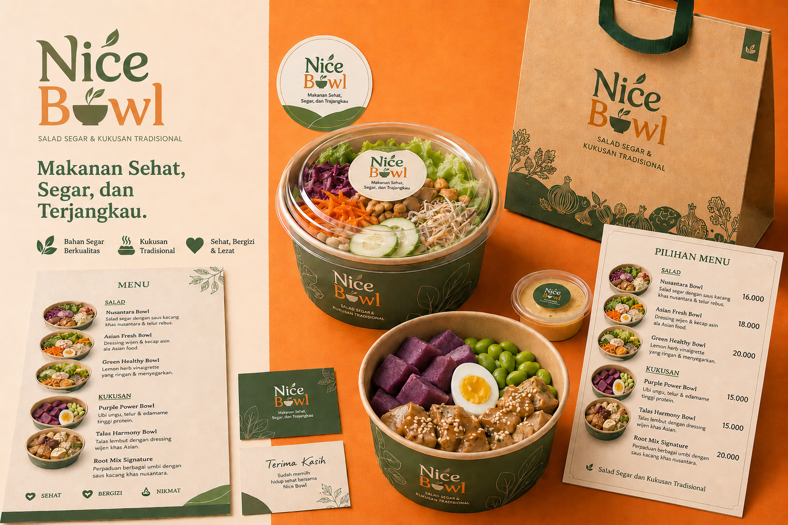
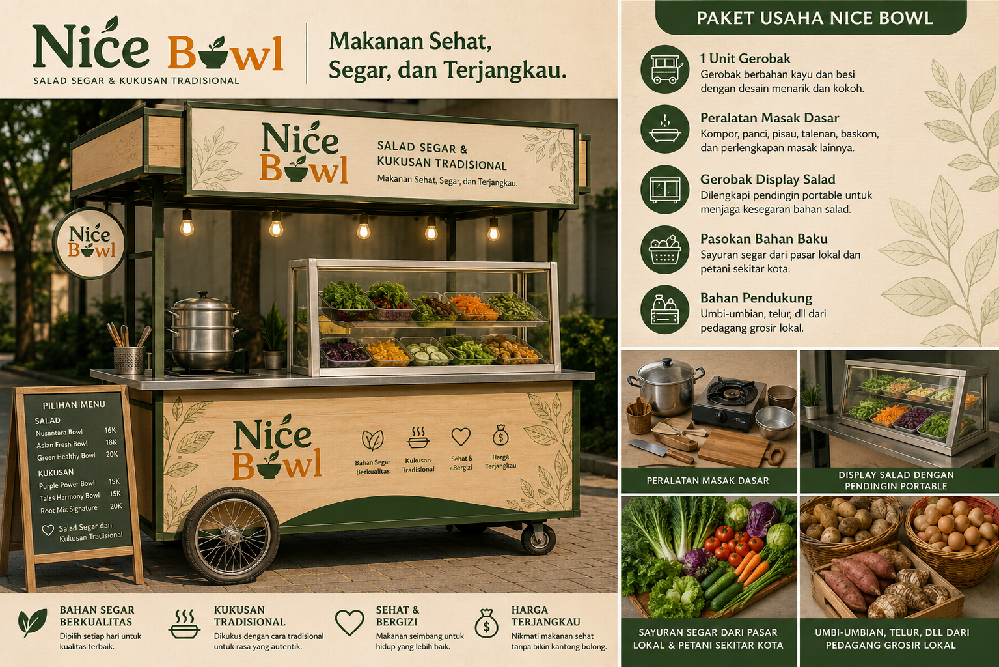
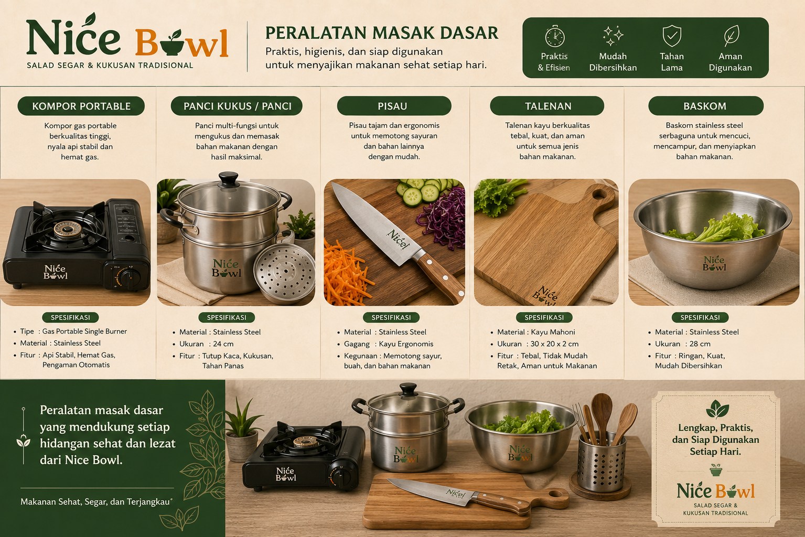
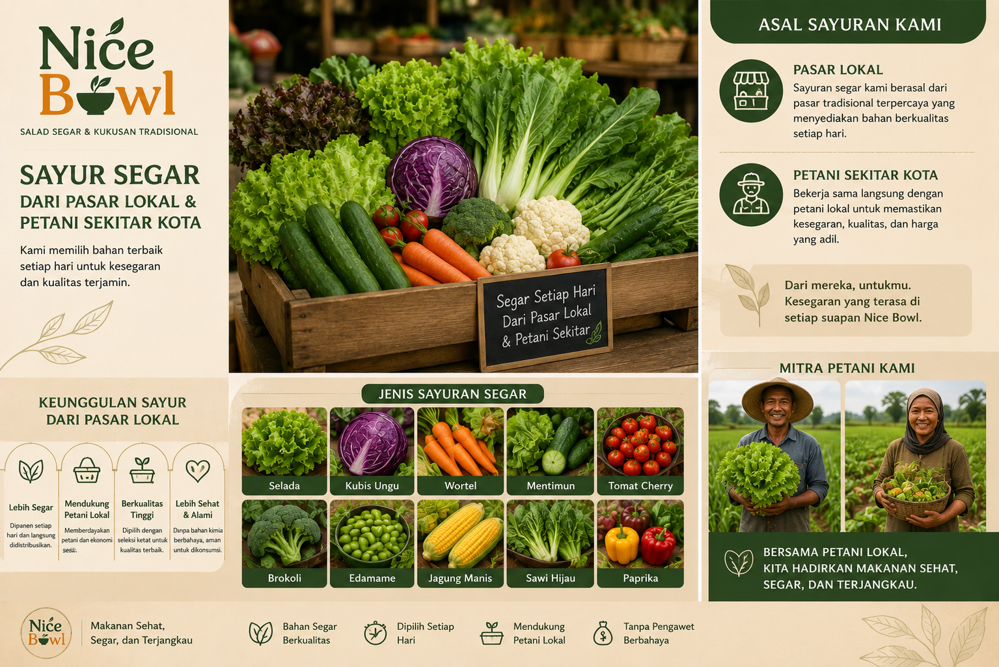

Salad Segar & Kukusan Tradisional
Makanan Sehat, Segar, dan Terjangkau
Gerobak mobile yang membawa salad sayur segar dan kukusan lokal bergizi ke area kampus, titik kuliner mahasiswa, dan ruang komunitas aktif.

Tentang Kami
Menjembatani gaya hidup sehat dan bahan lokal Indonesia.
Nice Bowl lahir dari tren hidup sehat di kalangan anak muda yang semakin peduli pada makanan segar, praktis, dan seimbang. Di sisi lain, bahan lokal seperti singkong, ubi, jagung, dan talas punya nilai gizi tinggi, namun sering dianggap kurang modern.
Kami mengemas salad segar dan kukusan tradisional dalam konsep gerobak mobile yang hangat, mudah dijangkau, dan cocok untuk mahasiswa, pekerja muda, ibu rumah tangga, serta komunitas diet dan fitnes.
Mengapa Pilih Kami
Simple, sehat, dan dekat dengan keseharianmu.
Bahan Segar Berkualitas
Sayur dipilih setiap hari dari pasar lokal dan petani sekitar kota.
Kukusan Tradisional
Diolah dengan cara sederhana untuk menjaga rasa autentik dan tekstur alami.
Sehat & Bergizi
Menu seimbang berbasis sayur, umbi, telur, dan sumber serat harian.
Harga Terjangkau
Porsi praktis untuk mahasiswa dan pekerja muda tanpa bikin kantong berat.
Galeri
Gerobak mobile, display segar, dan bahan lokal pilihan.



Dampak Sosial
Mendukung rantai pangan lokal yang lebih baik.
Nice Bowl mengutamakan bahan baku dari pasar lokal dan petani sekitar kota. Kami juga mendorong penggunaan kemasan yang lebih ramah lingkungan untuk mengurangi sampah sekali pakai dalam aktivitas kuliner harian.
Lokasi & Jam Operasional
Temui gerobak Nice Bowl di titik ramai harian.
Google Maps Placeholder
Area kampus, pusat kuliner mahasiswa, dan lokasi event akhir pekan.
Komunitas
Kata mereka tentang Nice Bowl.
"Porsinya pas buat makan siang setelah kelas. Saladnya segar dan harganya ramah mahasiswa."
Alya, Mahasiswa"Kukusan ubinya enak, praktis, dan bikin kenyang tanpa rasa berat."
Dimas, Pekerja Muda"Senang ada pilihan sehat yang tetap dekat dengan bahan lokal Indonesia."
Rani, Komunitas Fitnes
Kontak & Pemesanan
Siap pesan bowl sehat hari ini?
Hubungi kami untuk order, kerja sama event kampus, atau update lokasi gerobak harian.